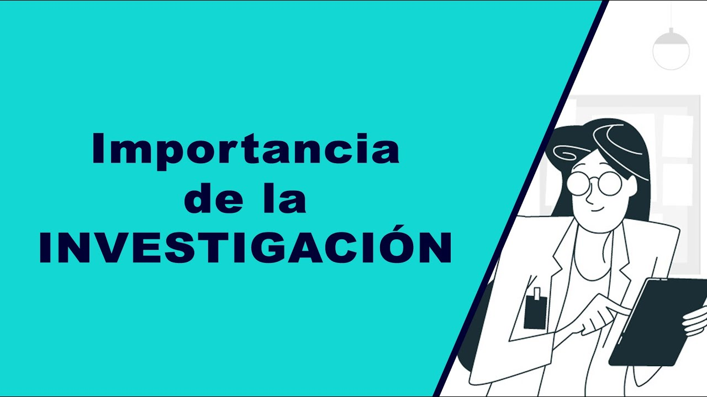
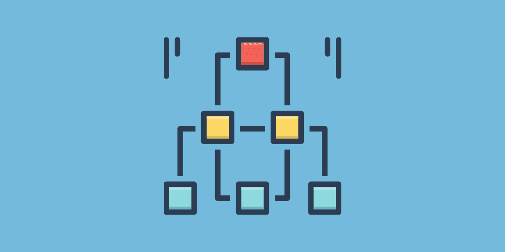
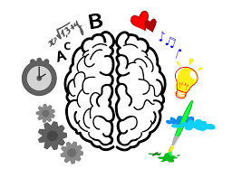
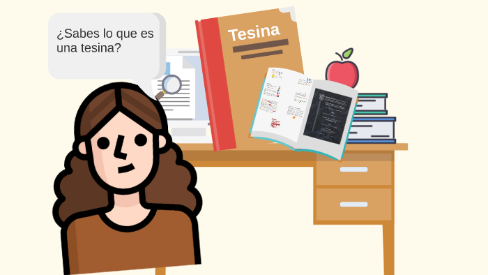
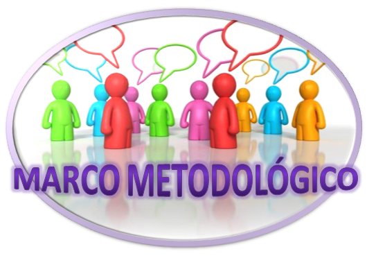
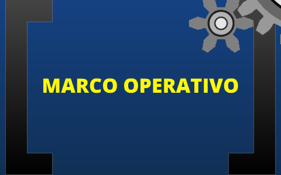
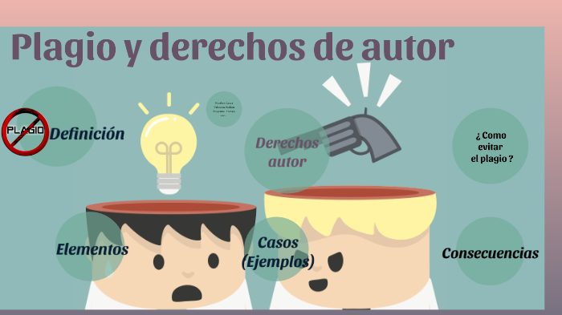
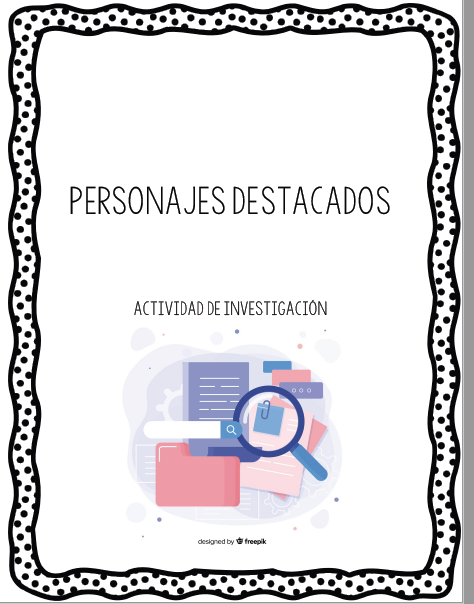
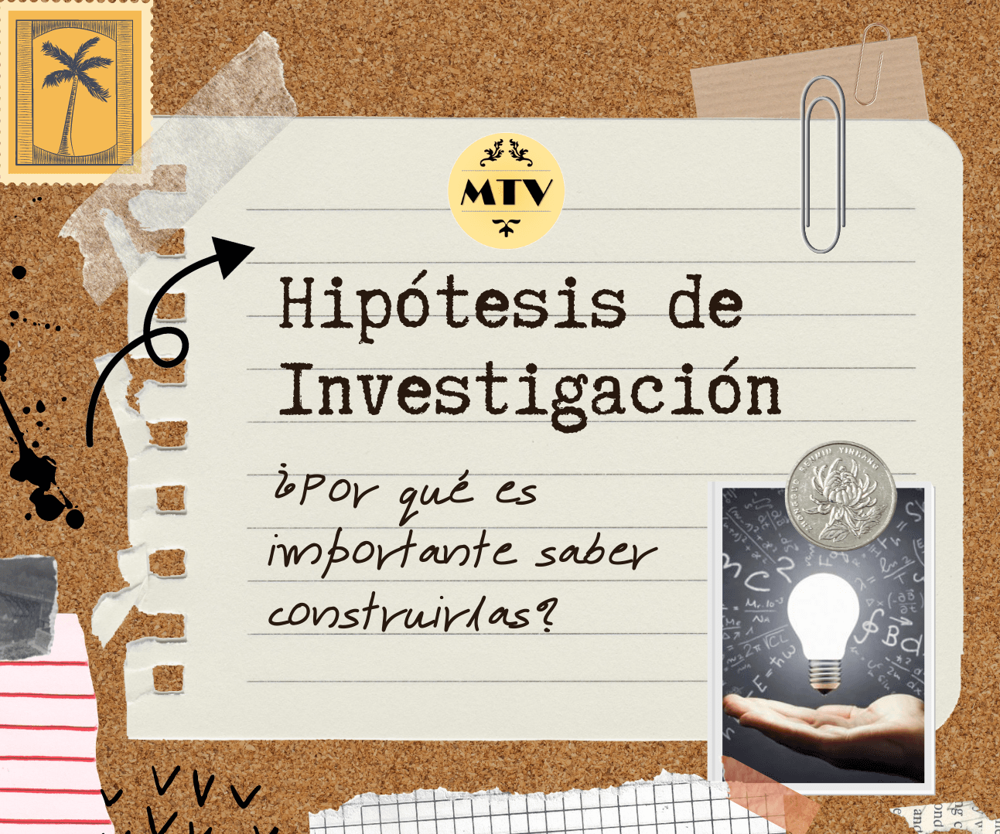

☰
Contenido Primer Parcial
Relación de la ciencia con los investigadores
Importancia de la Investigación
El Marco Conceptual
El pensamiento Reflexivo
La Motivación
La Tesina y su importancia
Contenido Segundo Parcial
La Tesina y su importancia
Marco Metodológico y su Importancia
Tesis, Tesina y un Artículo Científico
Métodos y Técnicas de Investigación
El marco Operativo y su Importancia
Personajes Destacados en la Investigación
Instrumentos de recolección de datos
Derechos de autor y el plagio
Contenido Examen Final
La Tesina y su importancia
Tipos de Hipótesis de Investigación
Regresar al tablero
Primer Parcial
Relación de la ciencia con los investigadores

Importancia de la
Investigación

El Marco
Conceptual

El pensamiento
Reflexivo
La Motivación en la Investigación

La Tesina y su Importancia
Segundo Parcial
La Tesina y su Importancia

Marco Metodologico y
su Importancia
La Tesis, Tesina y un Artículo Científico
Metodos y Tecnicas de Investigación

El Marco Operativo y su Importancia
Intrumentos de Recoleccion de Datos

Derechos de Autor
y el Plagio

Personajes Destacados de la Investigacion
Exámen Final
La Tesina y su Importancia

Tipos de Hipotesis en la Investigación